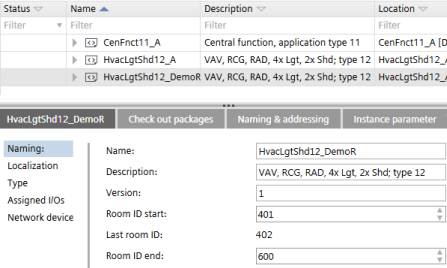

Application template details
The application template Details pane has the following tabs:
- Details
- Check out packages
- Naming & Addressing
- Instance parameter
- Substitution strings

Details tab > Naming
Setting | Description |
|---|---|
Name | Name of the application template. |
Description | Description of the application template. |
Application number | Application numbers are only visible if they are enabled in the application type. The property for enabling application numbers is set in ABT Pro. |
Version | Version of the application template. |
Room ID start | The first used room ID of the application template or ABT Pro project. |
Last room ID | The last used room ID of the application template or ABT Pro project |
Room ID end | The last usable room ID of the application template or ABT Pro project |

You can find an overview of room ID ranges of all application templates in Settings > Number ranges > Room ID overview.
Number ranges
Details tab > Localization
Shows the used language in the application template and in the project.
Setting | Description |
|---|---|
Object names |
The value is derived from Settings > Naming defaults > Naming rules. |
Project/system | Active project language. |
Runtime languages | Shows the defined runtime languages of the template and the project. The number of languages which can be selected is restricted to 4. The project language is automatically set as a runtime language. The runtime languages of the project are read-only. You can change the runtime languages in Settings > Localization. |
Details tab > Type
Line | Description |
|---|---|
Name | Name of the application template. |
Description | Description of the application template. |
Engineering unit | The used unit system. The value is derived from Settings > Localization. |
Version | Version of the application template. |
Automation station type | The used automation station type, e.g. DXR2.E18 |
Details tab > Assigned I/O's
Shows a grouped overview of the defined hardwired I/O's and used channels.
Details tab > Network devices
Shows a grouped overview of the defined networked peripheral devices.
Checkout packages tab
Check-out packages are displayed for building elements, areas, and devices. Check-out packages indicate the corresponding project paths that have to be writable. This allows the identification of the directories to be checked in or out from a project repository in a distributed engineering environment with Branch Office Server (BOS).
Only the top folders are listed because only the top folders have to be checked out.
Column | Description |
|---|---|
Folder | Relative path to the folders where the application templates stations are saved. |
Description | Name of the application template. |
Type | Type of project or template, e.g. application template or ABT Pro project. |
Naming & Addressing tab
Column | Description |
|---|---|
Name | Name of the automation station. |
Location | Location of the automation station |
Description | Description of the automation station |
Equipment ID | Equipment ID of the automation station. |
Device instance number | The device serial number (device instance number) that is associated with the BACnet device. |
Network number (MS/TP) | Number that identifies the network. Range 1‑65534. Default 1. |
Use DHCP | If selected, DHCP is used to automatically configure the IP addresses. |
Auto addressing (MS/TP) | When activated, the MAC address settings are obtained automatically. |
Address | IP address of the device. |
MAC address (MS/TP) | The first MAC address for the MS/TP port. |
Baud rate (MS/TP | Specifies the rate at which data is sent to the bus. |
Max manager address (MS/TP) | Set the Max manager address to prevent the passing of the token to unused MAC addresses situated after the manager (MS/TP). |
Instance parameter tab
Column | Description |
|---|---|
Name | Automation station name. Read-only. |
Location | The location name is composed of the building structure location and the name of the room, room segment or central function. Read-only. |
Equipment tag | Automation stations equipment ID. Read-only. |
Instance parameters | One column for each instance parameter. The list contains the object description, the parameter description, the value, and the unit. |
You can only view and change parameter values in ABT Site if the Avail. on AS check box for the selected parameter is selected. The Avail. on AS check box is set in Configuration > Default values.
Configuring default values (template)
If selected, the corresponding object parameters are available in the following areas:
- Device details > Instance parameter page
- Application template details > Instance parameter tab
- Building > Device list > Load instance parameter
- Checkout report
Substitution strings tab
Column | Description |
|---|---|
Substitution string | Lists substitution strings defined for the automation station. |
Replacement string | The substitution string is used as the default replacement string. Default values are marked in italics. Changed values are marked in bold. |